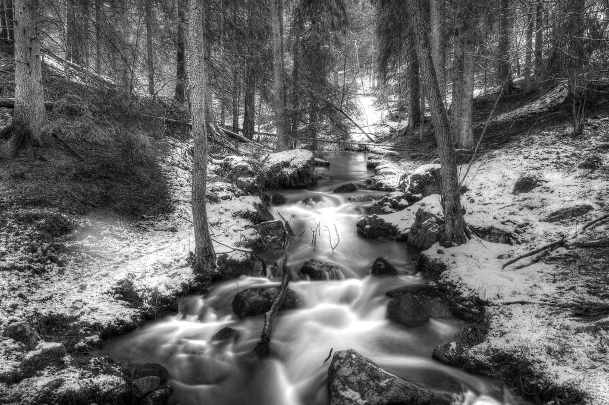

Tjänster
Vi är sex personer och har två servicebilar. Eftersom allt glas annars måste komma med båt från Nynäshamn håller vi ett större lager än de flesta glasmästerier i vår storlek – ungefär 900 rutor i 60 vanliga mått.
Var på ön finns huset?

Året-runt-boende
Gotlänningar som behöver en ny ruta, en duschvägg eller en spegel. Vi kör ut till hela ön utan körtillägg i Visby, Slite och Hemse.
Övriga orter har ett fast tillägg som står i prislistan.

Sommarhus
Många sommarhus står tomma från september till maj. Vi besiktar fönstren i april och byter spruckna rutor innan ägarna kommer.
Ägaren får en rapport med bilder och kan godkänna åtgärder per mejl.

Världsarvet Visby
Innanför ringmuren gäller särskilda regler för fönster och glas. Vi har arbetat med kommunens byggnadsantikvarie i trettio år.
Vi har lager av munblåst och valsat glas för äldre bågar.

Handel och besöksnäring
Restauranger, hotell och butiker som har bråttom inför sommaren. Vi tar de flesta jobben i mars och april.
Under Almedalsveckan har vi jour för krossade skyltfönster.
Så kommer glaset till dig
- 1

Ring eller mejla
Berätta var huset ligger och skicka gärna en bild på rutan.
- 2

Lager eller beställning
Finns måttet i lager kommer vi samma vecka. Annars beställer vi och glaset kommer med båten inom tio dagar.
- 3

Utkörning
Vi samlar jobben per del av ön så att du inte betalar för långa körningar.
- 4

Montering och bortforsling
Det gamla glaset tar vi med till återvinningen på Slite.
Utbildning och avtal
- Medlem i GBFMedlemmar och följer branschens riktlinjer för säkerhetsglas i bostäder.
- Gesäller i lagetJakob och Simon har gesällbrev, Elin är utbildad i byggnadsvård på Gotland.
- ByggnadsvårdUtbildade i traditionella fönstermetoder och kittning med linoljekitt.
- FörsäkringsavtalAvtal med tre försäkringsbolag för stormskador och krossat glas.